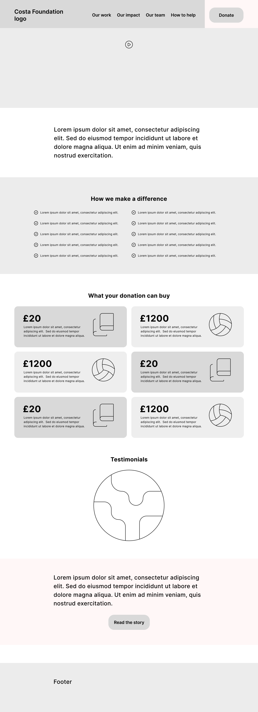
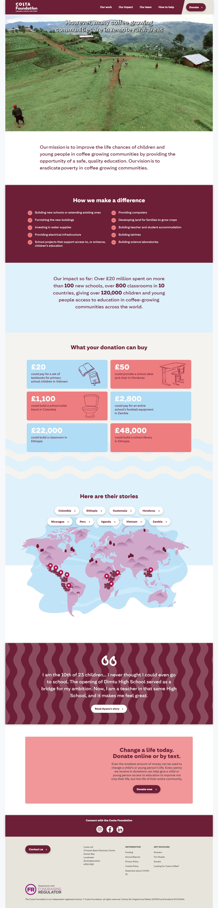

Website Redesign: Costa Foundation
Redesigning a donation-focused website through heuristics, UX laws and competitive analysis.
Overview
As part of a broader effort, I led the redesign of several websites, one of the most relevant being the Costa Foundation site. The challenge was unique: we didn’t have direct access to end users. To overcome this, we started with an in-depth benchmarking analysis of major competitors’ donation flows and applied UX Laws and usability heuristics to design a more effective experience.
The main objective: increase donations by simplifying the path to the "Donate" call-to-action (CTA).

Process — Wireframes & Design Decisions
Due to space constraints, only the wireframe of the homepage is shown here. The client, however, received the complete set of redesigned pages and interaction flows, including motion UI.
Key recommendations included: moving from a hamburger menu to a full display menu on desktop, highlighting the active navigation path, and adding the “Donate” option directly to the main menu.
The section How We Make a Difference was kept, but expanded into card-based elements specifying where donations could be allocated.
Testimonials were relocated to the bottom of the site and restructured to avoid a carousel format, ensuring improved accessibility.
Homepage Wireframe
Proposed homepage wireframe, showing simplified navigation and highlighted Donate CTA.
Redesigned Homepage
- Improved navigation: moved from a hidden hamburger menu to explicit navigation options
- Reduced the number of steps required to reach the Donate CTA
- Redesigned the donation flow for greater clarity and efficiency
- Created a responsive design ensuring seamless experience on mobile and desktop
Redesigned Homepage Wireframe
UX Laws Applied
- Fitts’s Law: The primary CTA ("Donate") is large, easy to click, and placed in high-attention areas.
- Hick’s Law: Clear and limited pathways (Donate, Fundraise, Partner) reduce decision fatigue.
- Jakob’s Law: Structure follows familiar charity website conventions, easing navigation.
- Von Restorff Effect: Donate CTA stands out visually against secondary actions.
- Aesthetic-Usability Effect: A clean, consistent design increases trust and donation likelihood.
Outcomes & Impact
- Improved navigation: moved from a hidden hamburger menu to explicit navigation options
- Reduced the number of steps required to reach the Donate CTA
- Redesigned the donation flow for greater clarity and efficiency
- Created a responsive design ensuring seamless experience on mobile and desktop
Traffic growth in one quarter
Sustained increase in Donate clicks